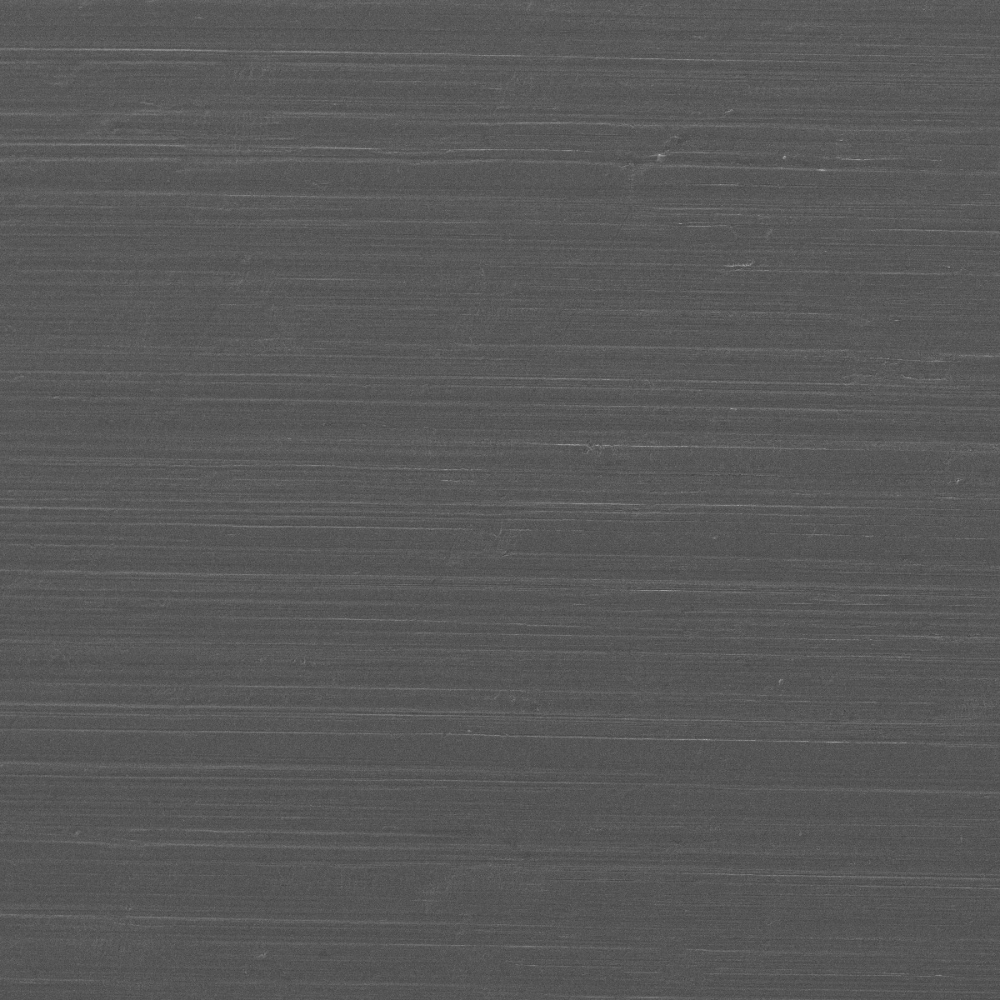
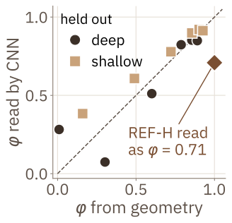
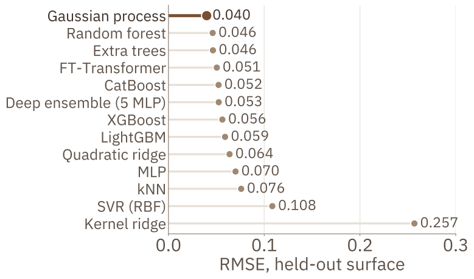
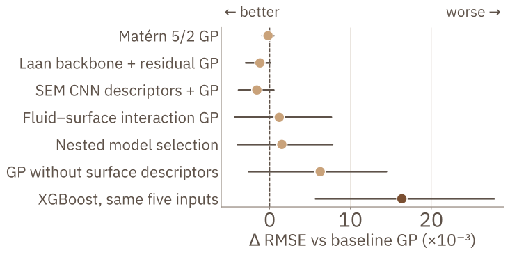
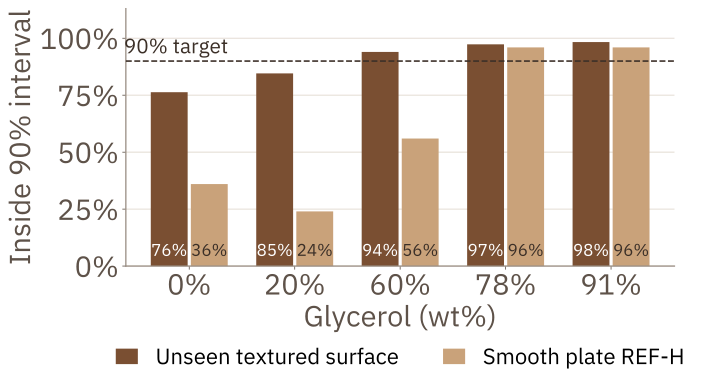
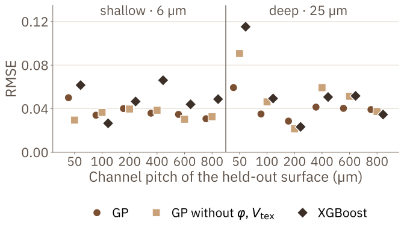
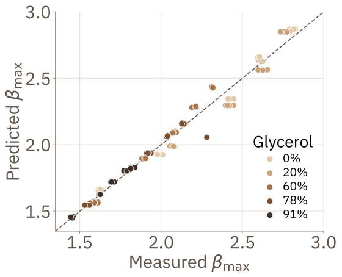

Methods
2Reading the surface from SEM
Plateaus between laser tracks look like the smooth plate. Track widths w from SEM (about 45 µm deep, 30 µm shallow) give every surface two descriptors:
Textured φ runs from 0.01 (D50) to 0.93 (S800); REF-H is simply φ = 1. Invented spacing/depth codes moved REF-H error by up to 0.022; with φ, ±10 µm in track width moves it by at most 0.005.



3From SEM image to prediction

4Physics inputs
Recomputed Re and We match the dataset to 5×10−7; Oh adds nothing new. The Laan scaling law [3] (P = We Re−2/5) was derived on wettable surfaces: here it reaches only R² = 0.71 and misses unseen surfaces by 11% on average.
5Leakage-safe evaluation
Each condition was repeated five times, so a random split puts near-identical twins in train and test.
Inputs ln Re, ln We, ln D0, φ, Vtex; target ln βmax. A change is accepted only if its 95% interval from resampling whole surfaces (4,000 draws) excludes zero.
Results
613 models, one test

7What did not help

Paired surface-bootstrap 95% CIs. A Laan backbone, other kernels, nested selection and CNN descriptors each move the error by under 0.002. Only XGBoost differs significantly, and it is worse. Removing φ and Vtex: 0.040 → 0.046. The simple GP stays.
Future work
- Measured advancing and receding angles for every fluid–surface pair as an input.
- Noise that depends on viscosity (Ohnesorge number).
- New surfaces, with a test set held back before any tuning.
8Knowing when not to trust it

9Surface by surface

D50 (φ = 0.01, the edge of the range) is hardest for every learner. The descriptors cut its error from 0.091 to 0.059, but hurt on S50 and D200. With 12 surfaces, a hint, not proof.
10Smooth-plate stress test
